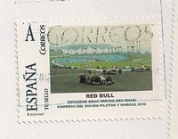

Spain
 |
 Issue date: 2011 A single stamp showing Jenson Button in the McLaren MP4/26 at the Hungarian Grand Prix in 2011. Jenson Button won the race, which was his 200th Grand Prix start - the Hungaroring is also where Button scored his maiden win in 2006. Issue date: 2010 A single stamp featuring the 2010 Mercedes MGP W01. The Mercedes MGP W01 was designed and built by the Mercedes GP Petronas team for the 2010 season and was driven by the returning seven-time World Champion Michael Schumacher and Nico Rosberg. The car was revealed at the Circuit Ricardo Tormo near Valencia at the first official test of the year on February 1. The team's silver livery was officially unveiled at the Mercedes-Benz Museum in Stuttgart on January 25, 2010 on the chassis of a Brawn BGP 001 following Mercedes' purchase of the championship-winning team of 2009. The team's achievements in their first season did not come close to those of Brawn the previous year, with the Mercedes battling Renault for the title of 'best of the rest' behind the leading three teams of Ferrari, McLaren and Red Bull. Rosberg finished on the podium three times, at Sepang, Shanghai and Silverstone. Schumacher's best finishes were three fourth places. He did not score a race win, podium, pole position or fastest lap for the first time since his debut season in 1991, and also scored the worst finish of his F1 career at Valencia, where he finished fifteenth. Schumacher was penalised for dangerous driving after forcing his former Ferrari team-mate Rubens Barrichello towards the pit wall at 180 mph (290 km/h). At the last race in Abu Dhabi Schumacher spun while trying to overtake Rosberg and was hit by Vitantonio Liuzzi's Force India. The team finished fourth in the Constructors' Championship, with 214 points. Issue date: 2010 A single stamp featuring the 2010 McLaren Mercedes MP4/25. The McLaren MP4-25, driven by 2009 World Champion Jenson Button and 2008 World Champion Lewis Hamilton, was officially unveiled at title sponsor Vodafone's headquarters in Newbury, Berkshire, United Kingdom on January 29, 2010. McLaren were runner up in the constructors' championship in 2010. The Red Bull Racing team complained to the FIA about the legality of the MP4-25's rear wing. The design uses a small "snorkel" air scoop mounted in front of the driver that channels air through a duct in the cockpit and towards the rear of the car. Changes in the pressure in the duct, in combination with small slots on the rear wing, causes the wing to enter a stalled state at high speed, reducing aerodynamic drag and allowing the car as much as an extra 6 mph (9.7 km/h) on straights. The effect is controlled by the driver covering up a small hole in the cockpit with his left leg - this is not considered by the FIA to be a moveable aerodynamic device, which would be banned under the technical regulations. Known internally as the RW80 it is widely called the "F-Duct" system either due to the shape of the air intake or the fact that it is beside the F of the Vodafone logo. Another term for the system is switchable rear wing (SRW). The car was inspected on the Thursday prior to the Bahrain Grand Prix (the season opener) and cleared to take part in the race. Issue date: 2010 A single stamp featuring the 2010 Ferrari F10. The car was unveiled in Maranello, Italy on 28 January 2010. On 20 February, Fernando Alonso declared that the F10 was the best car he had ever driven, and that its true pace was being hidden from its rivals. Fernando Alonso and Felipe Massa drove the car to 3rd place in the constructors' championship.  Issue date: 2010 A single stamp commemorating Red Bull Racing's first championship winning year. For the 2010 season, the team retained both Mark Webber and Sebastian Vettel, with Renault remaining the engine supplier. The Adrian Newey designed RB6 chassis proved to be the best handling car on the grid, as it did and continued to do in 2009 and 2011 respectively, having a noticeable advantage over that of McLaren and Ferrari. Red Bull Racing won their first constructors' championship at the penultimate round in Brazil; Sebastian Vettel won his first drivers' title at the final round in Abu Dhabi.  Issue date: 2010 A single stamp issued to commemorate the 1-2 victory for Red Bull Racing at the Brazilian Grand Prix in 2010. Sebastian Vettel won the race and this was enough to give Red Bull Racing the constructors' championship for the first time. Mark Weber was second in the sister Red Bull. Issue date: 2010 A single stamp issued to commemorate the 1-2 victory for Red Bull Racing at the Japanese Grand Prix in 2010. Sebastian Vettel won the race from pole and Mark Weber was second in the sister Red Bull.  Issue date: 2012 A single stamp issued to commemorate Fernando Alonso's (Ferrari) win at the 2012 European Grand Prix. The race was held at the Valencia street circuit and was the last time that the circuit will hold the European Grand Prix, as from 2013 the Spanish Grand Prix will alternate between Barcelona and Valencia.  Issue date: 2012 A single stamp commemorating the 2012 Hungarian Grand Prix. The race was won by Lewis Hamilton (McLaren), with Kimi Raikkonnen (Lotus) second and Romain Grosjean (Lotus) third. Issue date: 2012 A single stamp commemorating Fernando Alonso's victory at the German Grand Prix in 2012. The race was held at the Hockenheimring. Issue date: 2012 A single stamp featuring the Ferrari F150, Ferrari's 2011 challenger. The '150' in the name was chosen to celebrate the 150th anniversary of Italy's unification. In early 2011, Ford gave its intentions to sue Ferrari over the F150 name (Ford owns the F150 trademark) - so Ferrari tweaked the name to "Ferrari 150 Italia". The car itself lacked pace and was not able to mount a challenge to Red Bull Racing. Issue date: 2012 A single stamp featuring the Renault R25. The 2005 Renault R25 won both the Drivers' (Fernando Alonso) and the Constructors' Championships - the first titles for any car racing with a French licence since the Matra MS80 1969. This car was also one of only two championship winners since 1991 not to have been designed by either Adrian Newey or Rory Byrne. Issue date: 2012 A single stamp featuring the 2009 Renault R29. The Renault R29 was a big disappointment - the car arguably became less competitive throughout the season. Renault started the season as the ING Renault F1 team, but ING withdrew their sponsorship afte the 'crashgate' scandal. The Renault F1 team ordered Nelson Piquet Jr to crash deliberately during the Singapore Grand Prix in order to gain advantage for his team mate, Fernando Alonso. Issue date: 4th May 1969 A single stamp featuring the 1969 Spanish Grand Prix. The race was held at the Montjuic (Barcelona) circuit on the 4th May. The race was notable because it was the last race of the high wing era - both works Lotus cars suffered massive accidents when their suspension-mounted wing supports failed. Jackie Stewart produced a dominant performance finishing two laps ahead of the runner up (this has only happened twice in the history of Formula 1).  Issue date: 2006 A single stamp showing the Chequered Flag. The chequered flag is displayed at the start/finish line to indicate that the race is officially finished. The origin of the flag is unknown, the most likely explanation is that the high contrast flag is most conspicuous against the background of a crowd, especially when races were run on dirt tracks.  Issue date: 2006 An unknown Spanish stamp featuring Formula 1. Issue date: 2006 A single stamp featuring the 1975 Spanish Grand Prix. The race was held at the Montjuic circuit (Barcelona) on 27th April 1975. It is remembered as one of the most tragic race weekends after the death of 5 spectators (hit by the crashing Hill GH1 of Rolf Stommelen). It was also the race in which Lella Lombardi became the first and so far only woman to score points in a championship race. The race was won by Jochen Mass driving the McLaren M23 - the only win of his career. |